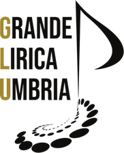

Sito in costruzione · Stagione 2026–2027
Il sipario si alza a breve
Siamo alle ultime prove:
il nuovo sito di Grande Lirica Umbria debutta a breve.

Sito in costruzione · Stagione 2026–2027
Siamo alle ultime prove:
il nuovo sito di Grande Lirica Umbria debutta a breve.